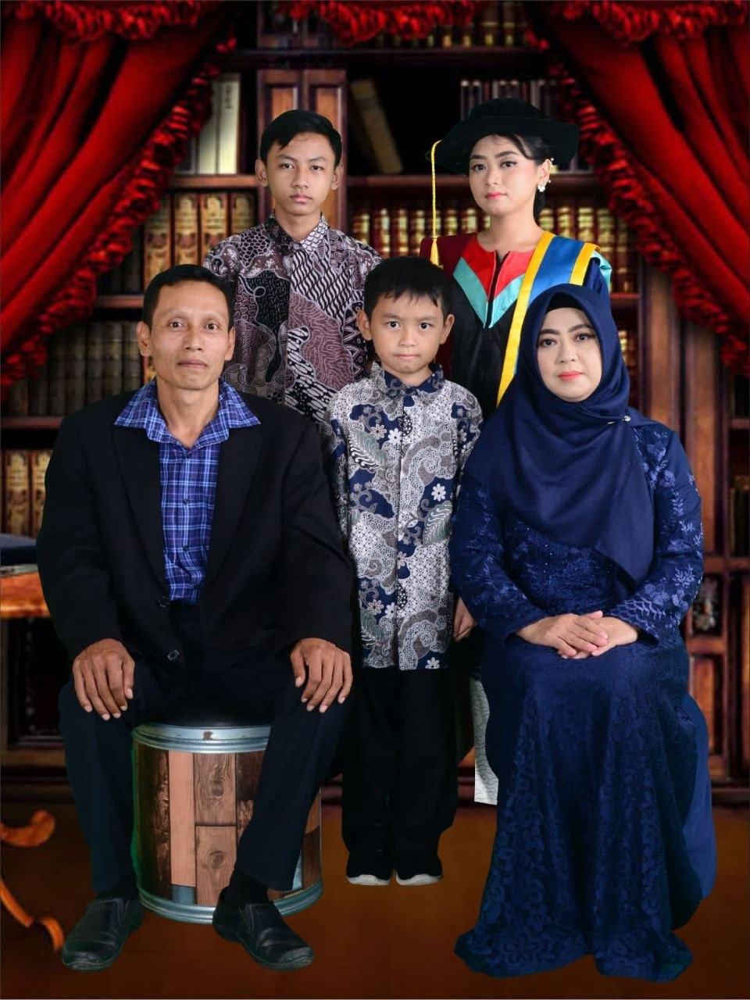
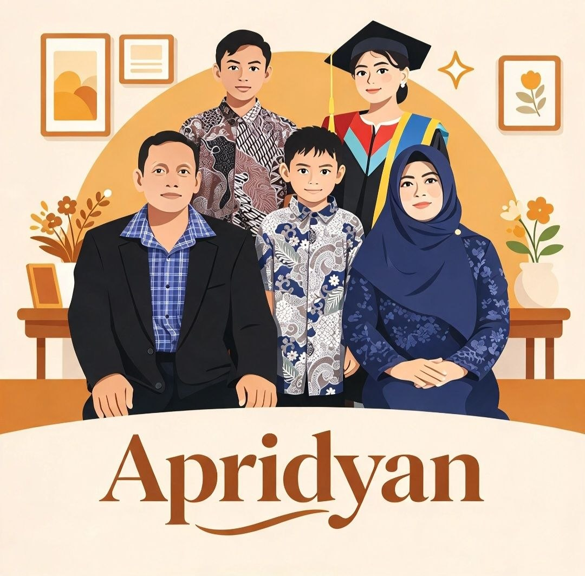
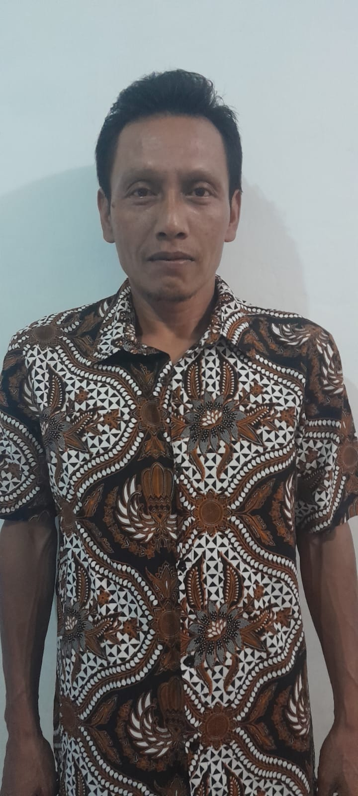
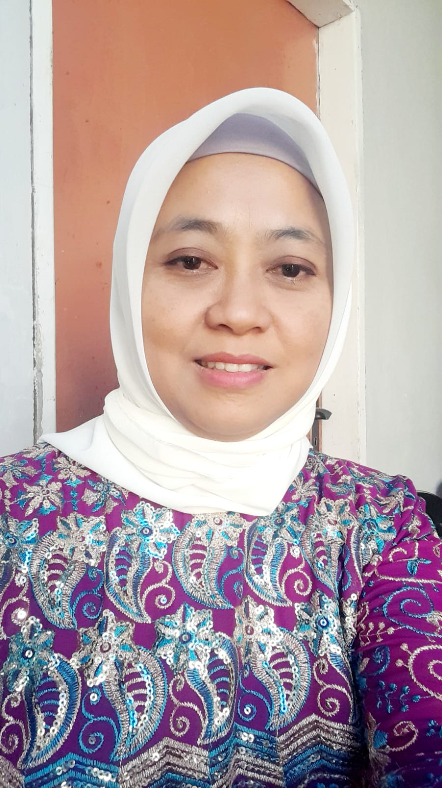
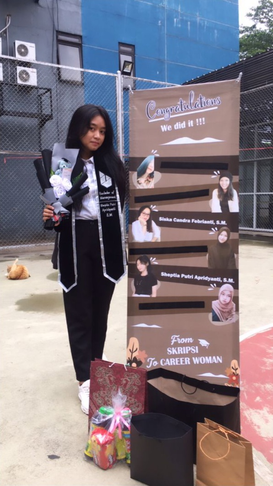
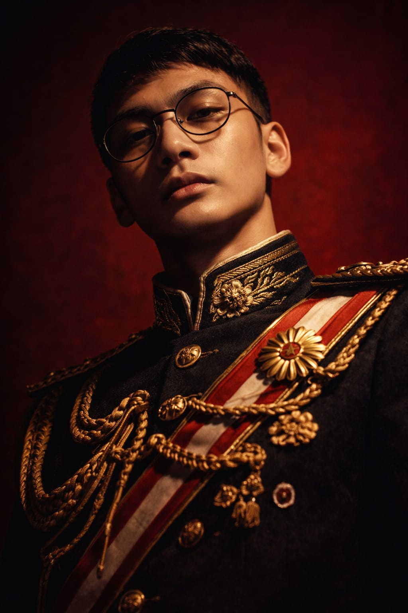
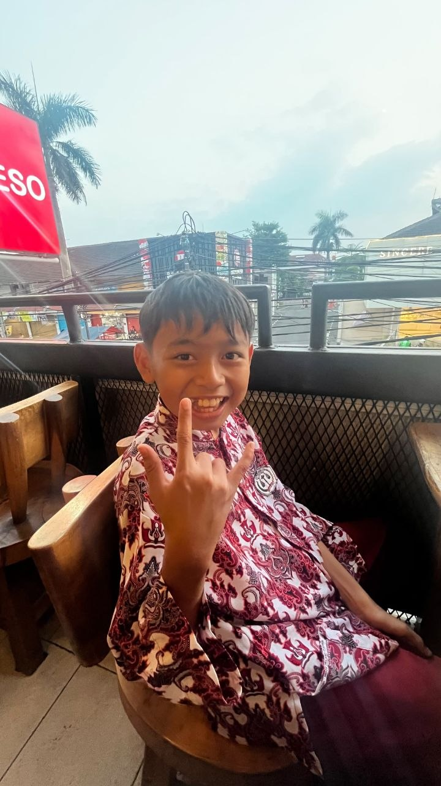

Kebersamaan
Sesibuk apa pun, kami selalu menyisihkan waktu untuk duduk satu meja dan saling bercerita.
Satu halaman untuk menyimpan kenangan, mengatur acara kumpul, dan saling mengirim doa serta ucapan, dari kakek nenek sampai si kecil.


Tentang kami
Dari meja makan sampai grup obrolan, dari tawa kecil sampai doa panjang. Di sini kami menyimpan hal-hal yang membuat kami tetap dekat.
Sesibuk apa pun, kami selalu menyisihkan waktu untuk duduk satu meja dan saling bercerita.
Resep turun-temurun, doa sebelum makan, dan kebiasaan kecil yang kami jaga dari generasi ke generasi.
Setiap foto dan cerita kami simpan rapi, supaya anak cucu bisa mengenal siapa kami.
Anggota keluarga

Penjaga rumah, tukang cerita lucu, dan koki kopi pagi.

Pemilik resep andalan dan sumber doa yang tak pernah putus.

Teladan adik-adik dan penengah setiap rebutan remote.

ah gitu loh yah.

Pembuat suasana ramai dan pemilik tawa paling keras.
Kenangan masa kecil
Taruh foto di folder foto/ dengan nama galeri-1.jpg sampai galeri-30.jpg, otomatis muncul di sini. Foto berjalan dari kanan ke kiri dan berhenti saat disentuh.
Ulang tahun keluarga
Ulang tahun anak-anak dan orang tua, dari tahun ke tahun.
Buku ucapan
Doa, kabar, atau sekadar sapaan hangat. Ucapan tersimpan di browser ini dan tampil di bawah form.
ApridyanNabil@gmail.com